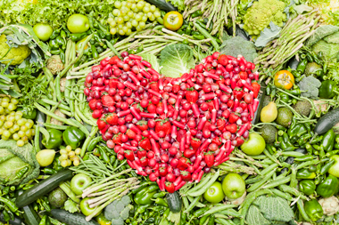

Healthy Living

Healthy Diet
A diet rich in vegetables and fruits can lower blood pressure, reduce the risk of heart disease and stroke, prevent some types of cancer, lower risk of eye and digestive problems, and have a positive effect upon blood sugar, which can help keep appetite in check.
At least nine different families of fruits and vegetables exist, each with potentially hundreds of different plant compounds that are beneficial to health. Eat a variety of types and colors of produce in order to give your body the mix of nutrients it needs.

Exercise
Regular exercise is one of the best things you can do for your health. It has many benefits, including improving your overall health and fitness, and reducing your risk for many chronic diseases. There are many different types of exercise; it is important that you pick the right types for you. Most people benefit from a combination of them: